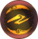
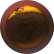
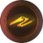
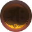
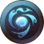
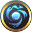
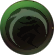

There are 16 Active Skills, 12 Passive Skills, and 11 Custom Active Skills in the Samurai Skill Tree. Custom
Active Skills are effects that can be applied to Weapon Active Skills. They must first be customized by going to
Skill Customization in the menus ⟶ going to a specific skill ⟶ press X / Square to open the Custom
Active Skill Settings.
Hidden Skills need to be farmed from the respective enemy. You can view all of
the Hidden Skills and where to farm them
here.
Legend:
 = Active Skill for High, Mid, and Low stance.
 = Active Skill for High stance.
 = Active Skill for Mid stance.
 = Active Skill for Low stance.

= Passive Skills.
 = Custom Active Skill.
| Skill Name | Description | Mission Requirement |
|---|---|---|
|
Stance [Innate] |
Press RB + Y / RB + X / RB + A to switch between High, Mid, and Low stances. Press L1 + Triangle / L1 + Square / L1 + X to switch between High, Mid, and Low stances. |
- |
|
Ki Pulse [Innate] |
When surrounded by blue light after an attack, press RB / R1 to recover your Ki. | - |
|
Purify Yokai Realm [Innate] |
Performing a Ki Pulse while inside a Yokai Realm pool will dispel the pool. | - |
|
Grapple [Innate] |
Grapples an enemy who is out of Ki or a downed Yokai, then follows up with a powerful attack. | - |
|
Final Blow [Innate] |
Grapple a downed enemy before following up with a powerful attack. | - |
|
Ki Pulse Heaven |
Activates when you recover full Ki from a Ki Pulse. Applies a special effect that raises the damage caused by your next attack. (High Stance only) | - |
|
Ki Pulse Man |
Activates when you recover full Ki from a Ki Pulse. Applies a special effect that negates the Ki damage you recieve from the next attack that hits your guard. (Mid Stance only) | - |
|
Ki Pulse Earth |
Activates when you recover full Ki from a Ki Pulse. Applies a special effect that negates the Ki consumption resulting from your next dodge action. (Low Stance only) | - |
|
Running Water Heaven |
Dodging at the perfect timing will now automatically trigger a Ki Pulse. (High Stance only) | - |
|
Running Water Man |
Dodging at the perfect timing will now automatically trigger a Ki Pulse. (Mid Stance only) | - |
|
Running Water Earth |
Dodging at the perfect timing will now automatically trigger a Ki Pulse. (Low Stance only) | - |
|
Flux |
Changing to another stance on a successful Ki Pulse increases the amount of Ki recovered. | - |
|
Flux II |
Increases Ki recovery when you switch stances during Flux. | The Way of the Warrior: Novice |
|
Flash Attack |
Performs a quick attack when switching weapons after a successful Ki Pulse | The Way of the Warrior: Novice |
|
Composure |
Press Y / Triangle or X / Square when guarding against an armed human enemy to take their weapon and perform a counterattack. Can only be used when bare-handed. | The Way of the Warrior: Novice |
|
Sacred Bird Flight [Hidden Skill] |
Perform a horizontal slice with Sohayamaru while moving at high speed, attack enemies in a wide area. | Hidden Skill dropped from Minamoto no Yoshitsune |
|
Sacred Bird Cry [Hidden Skill] |
Use Sohayamaru to attack your enemy with a barrage of slices. Holding the button down will use your Anima to perform a charged ranged attack, with Anima decreasing by 1 each time you launch an attack. | Hidden Skill dropped from Minamoto no Yorimitsu |
| Skill Name | Description | Mission Requirement |
|---|---|---|
|
Purify Yoaki Realm: Heaven |
While in High Stance: Increases your attack strength when you perform a purification with a perfectly timed Ki Pulse, recovering the maximum amount of Ki possible. | - |
|
Purify Yoaki Realm: Man |
While in Mid Stance: Increases your attack strength when you perform a purification with a perfectly timed Ki Pulse, recovering the maximum amount of Ki possible. | - |
|
Purify Yoaki Realm: Water |
While in Low Stance: increases your attack strength when you perform a purification with a perfectly timed Ki Pulse, recovering the maximum amount of Ki possible. | - |
|
Bow Master [I - III] |
Increases Bow damage by 5% | 5% | 10% | The Way of the Warrior: Novice |
|
Matchlock Master [I - III] |
Increases Matchlock damage by 5% | 5% | 10% | The Way of the Warrior: Adept |
|
Cannon Master [I - III] |
Increases Cannon damage by 5% | 5% | 10% | The Way of the Warrior: Veteran |
|
Quivermaker |
Increases the number of arrows that can be carried by 3. | The Way of the Warrior: Novice |
|
Shot Pouch |
Increases the number of rifle rounds that can be carried by 2. | The Way of the Warrior: Adept |
|
Round Carrier |
Increases the number of cannon rounds that can be carried by 1. | The Way of the Warrior: Veteran |
|
Hands of Death [I - III] |
Increases bare-handed attack damage by 20% |
[ I ]: The Way of the Warrior: Novice [ II ]: The Way of the Warrior: Adept [ III ]: The Way of the Warrior: Veteran |
|
Fortitude [I - III] |
Life +50 | +30 | +20 |
[ I ]: The Way of the Warrior: Novice [ II ]: The Way of the Warrior: Adept [ III ]: The Way of the Warrior: Veteran |
|
Deadly Eye [?? MAXIMUM ??] |
Ranged Attack Base(3) + 3 per level (Learning a more advanced version of the same skill will replace the previous one.) | The Way of the Warrior: Novice |
|
Fatal Fists [?? MAXIMUM ??] |
Bare-handed Attack Base(3) + 3 per level (Learning a more advanced version of the same skill will replace the previous one.) | The Way of the Warrior: Adept |
| Skill Name | Description | Mission Requirement |
|---|---|---|
|
Deliberate Slice |
Increases the maximum amount of Ki that can be recovered by a Ki Pulse by 30% for certain Active Skills. Ki Consumption Rate: 1.20 |
The Way of the Warrior: Novice |